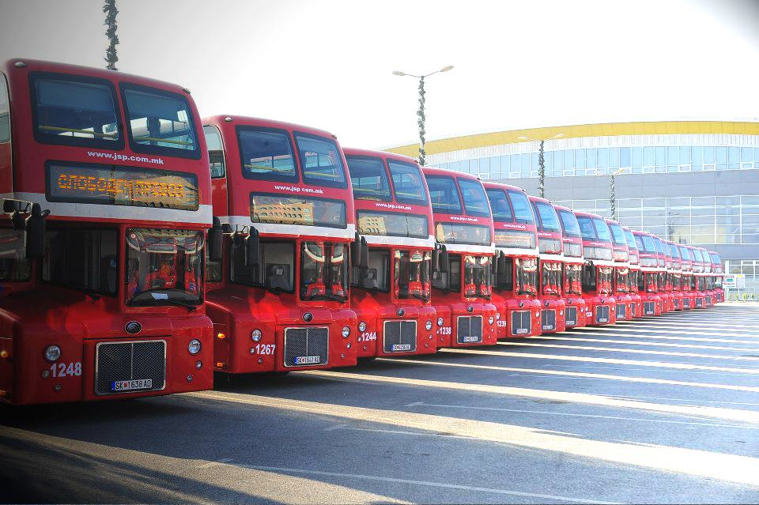

Твоето патување во светот на технологијата започнува тука.
Учениците: Мартин Дамкоски, Леонид Симоновски, Ива Јангеловска, Немања Рајковиќ и Василиса Курзакова, под менторство на професорката Тамара Боровска ќе го претставуваат нашето училиште на државниот натпревар ,,ЏУНИОР АЧИВМЕНТ,,
Нов гостин, нова епизода ➡️ https://youtu.be/2bJNyEn9Elw?si=dI_CI0AZnkBS7LhZ
Нашиот почеток и прв гостин на овој поткаст Гораст Цветковски ➡️ https://youtu.be/G0u0f_9p9jE?si=wOKT-A1SnGjWzJ2w

Ние сме ученичка компанија од СЕТУГС,,Михајло Пупин,, посветена за почист воздух и почиста средина. Истражете го нашиот продукт и дознајте како можеме да ја оствариме вашата визија.
Михајло Идворски Пупин бил светски познат научник, пронаоѓач и еден од основачите на НАСА. Неговиот пат од родното село Идвор до врвните универзитети во Америка е инспирација за секој млад техничар и инженер.
Неговите патенти во телекомуникациите и рентген-зраците го променија светот засекогаш, оставајќи наследство кое ние, како училиште што го носи неговото име, гордо го чуваме и продолжуваме.


Овој профил ги подготвува учениците за работа со хардвер, софтвер, програмирање на микроконтролери и одржување на компјутерски системи и мрежи. Идеален избор за идни ИТ инженери.

Изучување на електронски компоненти, печатени плочки, телекомуникациски мрежи и системи за пренос на податоци.

Дуално образование кое нуди учење преку работа во реални компании за производство и дистрибуција на електрична енергија.

Најновиот профил во нашето училиште! Ги подготвува учениците за креирање дигитални содржини, аудио и видео продукција, графички дизајн, анимација и веб дизајн. Совршен избор за креативци кои сакаат да ја спојат уметноста со најновата технологија.

Стручно оспособување за поправка и одржување на електрични машини, апарати за домаќинство и индустриска опрема со многу практична настава.

Профил фокусиран на поставување, одржување и поправка на електрични инсталации во станбени и индустриски објекти.

СЕТУГС „Михајло Пупин“ нуди одлична можност за вонредно образование, дооформување на веќе започнатото образование, како и преквалификација на кандидати во барани струки.
Процесот е целосно прилагоден за лица кои се веќе во работен однос, со флексибилни термини за консултации и полагање на испитите.
СЕТУГС „Михајло Пупин“ не е само образовна институција – тоа е центар каде теоријата се претвора во пракса, а идеите стануваат реалност. Ние создаваме генерации на иноватори, инженери и техничари кои се подготвени за предизвиците на модерното време, нудејќи образование директно поврзано со потребите на ИТ и електро-индустријата.
Учење во модерно опремени лаборатории со најнова опрема за електроника, роботика и компјутерски мрежи.
Директна соработка со водечките компании преку практична настава која нуди реално работно искуство уште во средно.
Нашите профили се најбарани на пазарот на трудот. Дипломата од нашето училиште е гаранција за успешна кариера.
Можности за патување, размена на искуства и пракса во европски земји преку бројни меѓународни проекти.

Автобусите кои возат до нашето училиште